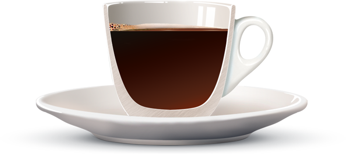
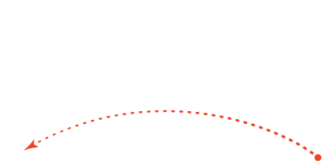
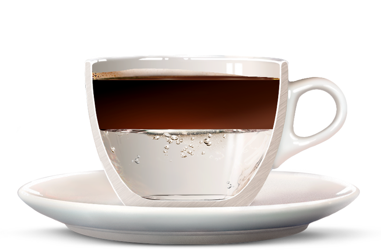
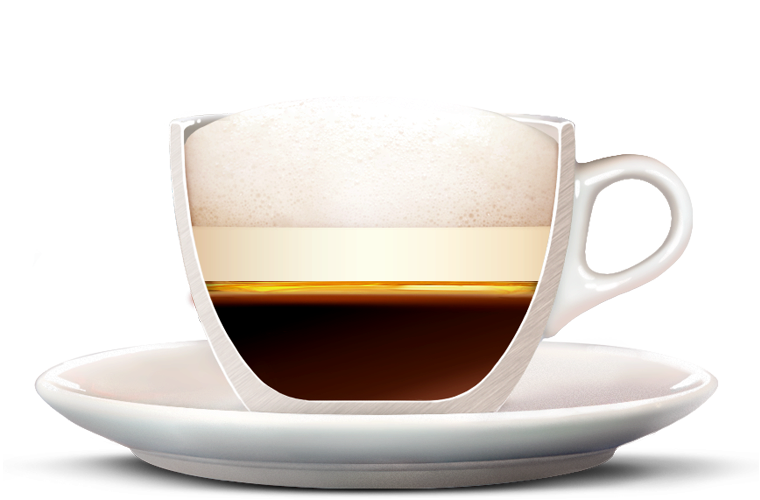

Наше Кофе
Анатомия Кофе

ЭСПРЕССО
Самый «быстрый»,
насыщенный и бодрящий
напиток из кофе. Риск быть
легко испорченным придает
ему особую тонкость
и избранность. Просто
доверьтесь мастерству
нашего бариста.


ЭСПРЕССО
Насыщенный и бодрящий
напиток можно разбавить
горячей водой в любом
соотношении.
ВОДА
От 60 до 120 мл горячей
воды — и получается
настоящая американская
находка. Менее крепкий
и концентрированный,
но все тот же приятный вкус.

МОЛОЧНАЯ ПЕНКА
Сверху выкладывают густую
молочную пенку. Именно
в ней заключена вся
прелесть напитка.
ЭСПРЕССО
Капучино начинают готовить
с насыщенного и бодрящего
эспрессо.
МОЛОКО
Эспрессо разбавляют
горячим взбитым молоком.

ЦЕДРА
АПЕЛЬСИНА
Освежает кофе
кисло-сладким
цитрусовым ароматом.
ШАПКА ИЗ
ВЗБИТЫХ
СЛИВОК
Остуженные сливки
добавляются густым
контрастным слоем.
КОРИЦА
Молотая корица имеет
сладкий вкус и приятный
аромат. И прекрасно
сочетается со вкусом
и ароматом цедры
апельсина.
ЭСПРЕССО
Классический крепкий
напиток из кофе.

МОЛОЧНАЯ
ПЕНКА
Сверху выкладывают густую
молочную пенку.
ЭСПРЕССО
Концентрированный напиток
в основе меланжа.
МОЛОКО
Подогретое молоко
со взбитой пенкой
завершает и делает легким
необычный ансамбль кофе
с медом.
ЛОЖКА МЕДА
Сладкий теплый тягучий мед
разделяет и одновременно
объединяет мягкое молоко и
крепкое эспрессо.

МОЛОЧНАЯ ПЕНКА
Воздушной гладкой
молочной пенки в латте
обычно больше, чем
в капучино.
ЭСПРЕССО
Все та же основа любого
напитка, насыщенный
эспрессо, аккуратно
добавляется в молоко. Так,
чтобы получился аппетитный
кофейный коктейль.
МОЛОКО
Молоко в латте важно также,
как кофе. Подогретым, его
наливают в чашку
в пропорции 3:1. Поэтому
латте такой нежный.